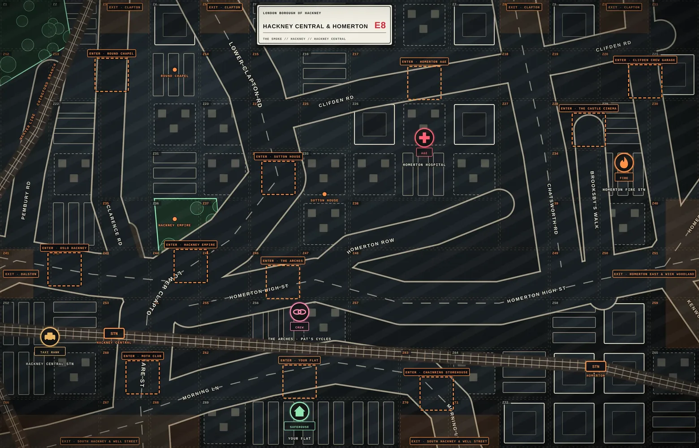
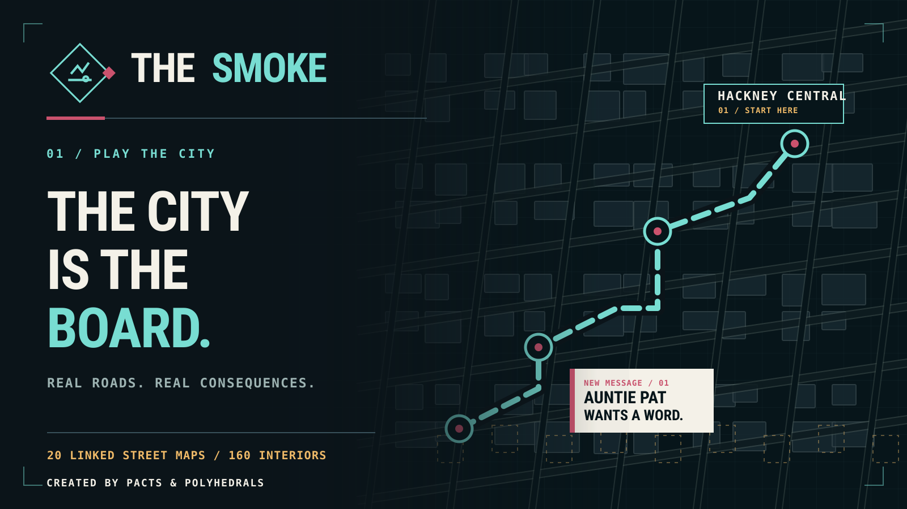
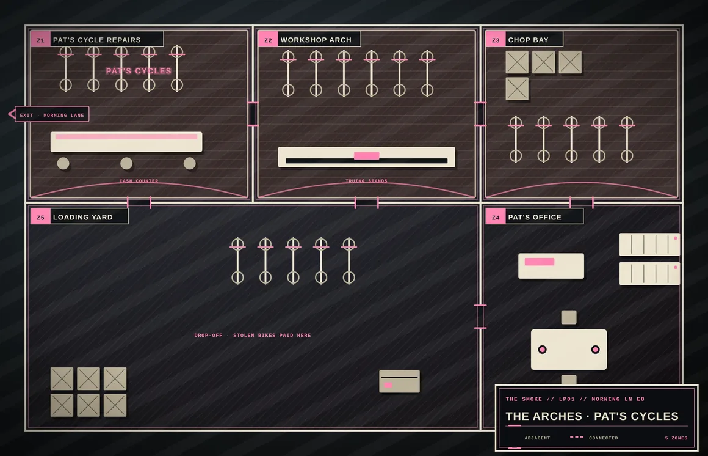
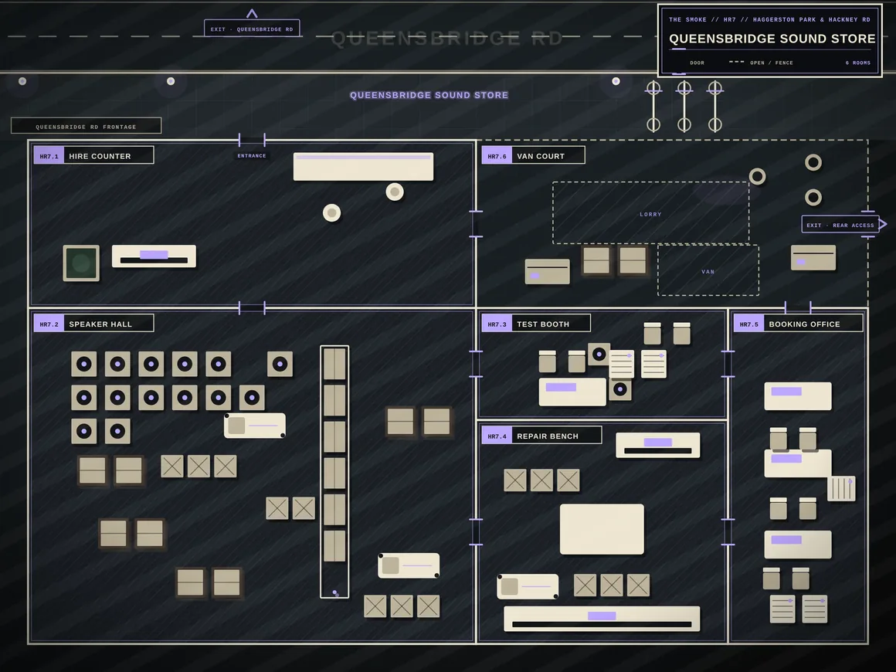
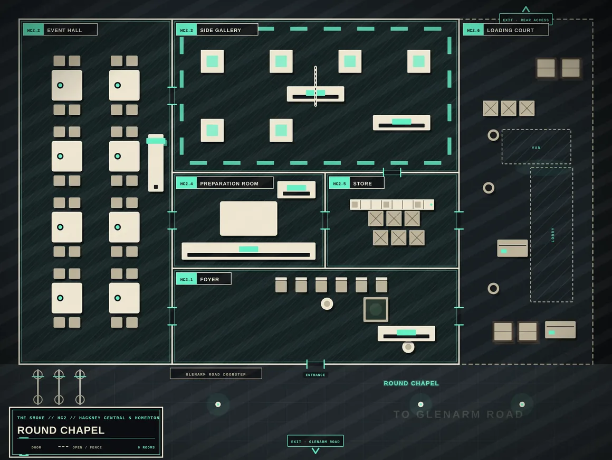

LONDON IS
THE BOARD.
Not a backdrop. A living, linked street atlas from Highbury to Stratford, with the routes, entrances and neighbourhoods your crew has to navigate. The atlas and in-game travel tools are part of the ongoing beta.
FIND YOUR WAY
ROUND.
Click a square on the street grid or choose a district to preview the actual Foundry VTT vector artwork.
THE 20 STREETS
North to south. West to east. One connected set of London maps.
Hackney Central & Homerton

THIS CITY
IS YOUR
BOARD.
From the arches on Morning Lane to the far side of Stratford, the streets connect the favours, the factions and every wrong turn. Explore the maps in the interactive atlas above.
BACK TO THE ATLAS
160 INTERIORS.
MORE THAN ONE WAY IN.
The streets don't end at the kerb. Shops, venues, garages, flats and back rooms make the sandbox playable inside and out.

THE ARCHES
Auntie Pat's workshop. Morning Lane, Hackney Central. The first place you learn who knows whom.

SOUND STORE
A mapped shop floor where a pair of speaker flight cases becomes more than a favour.

ROUND CHAPEL
One of the many named venues that turns a journey across London into an actual handover.
STREET SECTIONS
Connected route maps based on London streets.
APPROACH MAPS
Markets, yards, squares, parks, gates and towpaths.
PLAYABLE INTERIORS
Six keyed rooms per campaign venue, with front and secondary entrances.
TAKE THE
LONG WAY.
OR DON'T.
The Blower guides every turn if you want to drive. Your GM can also fast-travel any vehicle when the story moves faster.
THE STREET
IS YOURS.
THE TROUBLE TOO.
Get the rules. Find your crew. Start with one little job and see how far the city lets you go.